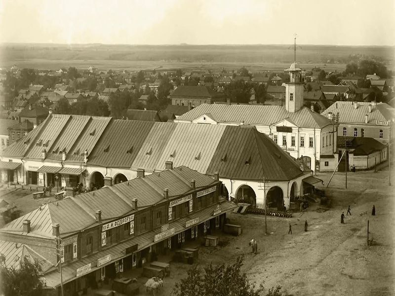
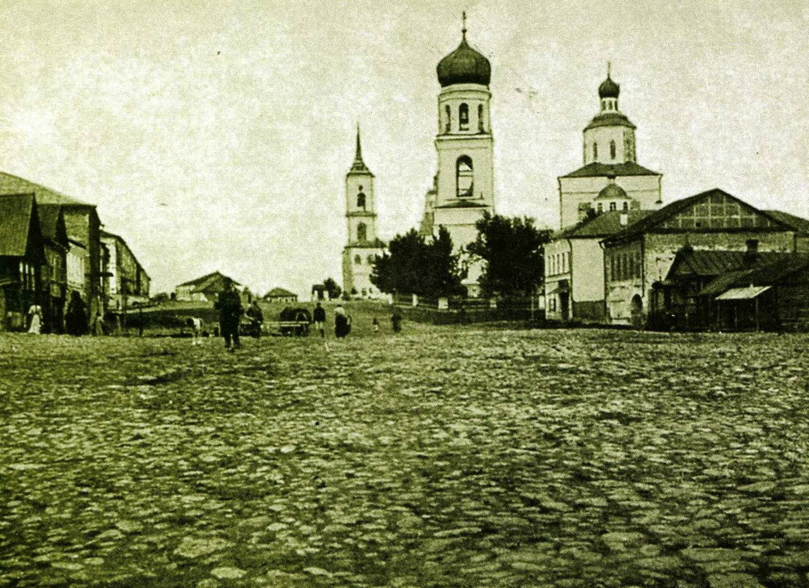
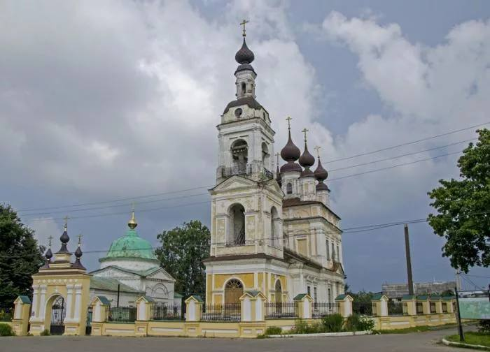
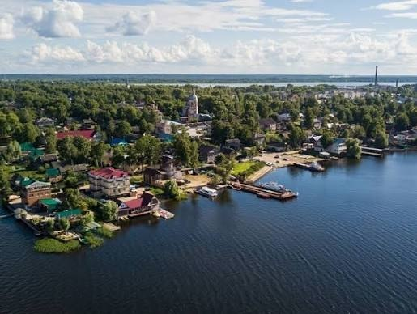
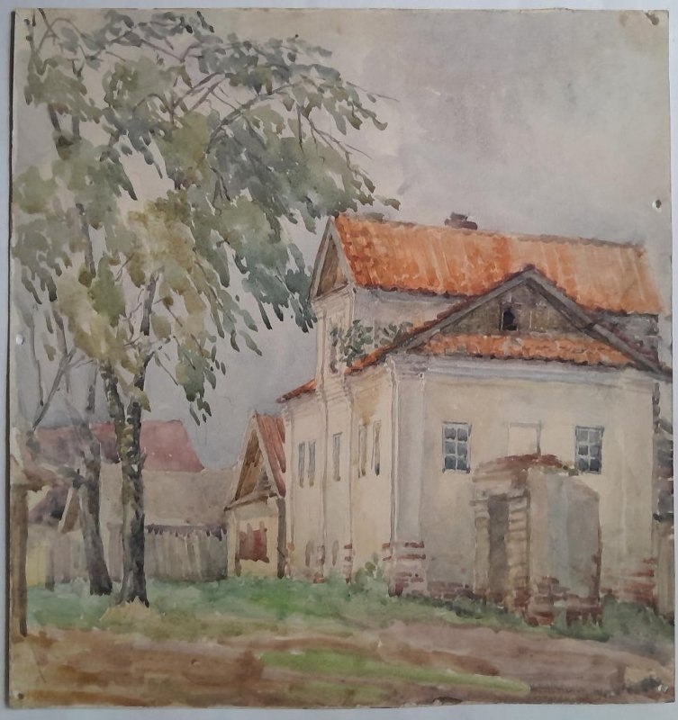
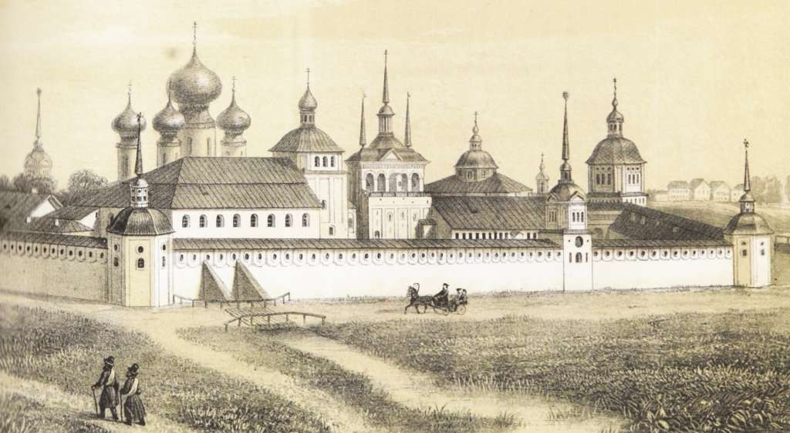
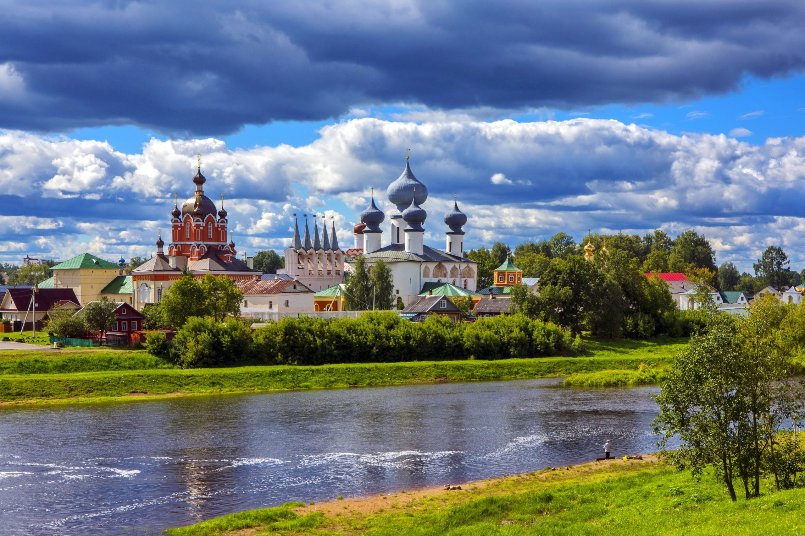
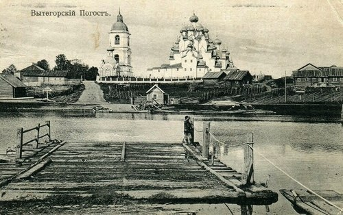
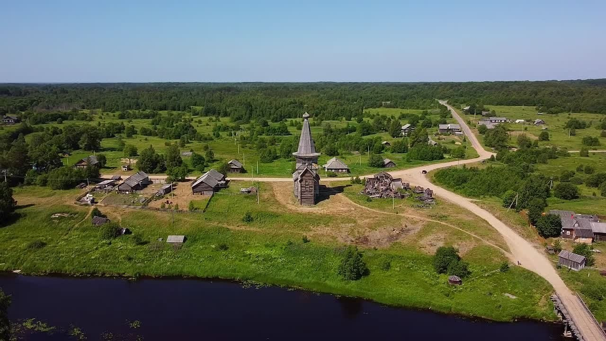

Боровичи
Статус города — 28 мая 1770 г.


Первые упоминания о поселении относятся к XV веку. Официальный статус города село получило 28 мая 1770 года по указу Екатерины II, подписанному по представлению новгородского губернатора Я. Е. Сиверса. В апреле 1772 года Сенат утвердил регулярный план застройки и герб города.
Через Боровичи проходила главная водная артерия, снабжавшая Санкт-Петербург продовольствием и лесом из Поволжья и центра России. Рядом находились опасные боровичские пороги на реке Мсте, где требовался строгий контроль и организация работы лоцманов.
Сиверс в 1764 году предложил проект реформы, чтобы упорядочить суд, полицию и сбор податей на местах, отметив выгодное положение Боровичей и «ко всяким промыслам склонный нрав» местных жителей.
Став директором водяных коммуникаций, Сиверс организовал расчистку боровичских порогов на Мсте. Это позволило баркам проходить опасный участок без необходимости выгружать часть товаров и перевозить их по суше. Также в городе было создано централизованное управление порогами, а позже (в 1786 году) открыта школа водных коммуникаций.
Город получил чёткую квартальную планировку. Уже через десять лет в донесении императрице отмечалось активное развитие купечества: «Город имеет купечество довольно промышленное, почему по новому плану и построено домов 248, а каменных — 7, да для построек вновь взято 7 мест».
Заслуги местных лоцманов отразились на гербе Боровичей 1772 года: на нём изобразили золотое солнце (знак милости императрицы) и окованный железом руль.
Вышний Волочёк
1770 г.; окончательно закреплён уездным городом в 1775 г.
Причины. Город располагался на Вышневолоцкой водной системе — главном пути снабжения Петербурга хлебом, лесом, пенькой и солью. Через него шли караваны судов, и он был своеобразным «краном» всей системы. Назрела необходимость административно оформить крупный транспортный узел, где скопились бурлаки, судовщики, купцы, ямщики и постоялые дворы. При Сиверсе с 1764 г. город вошёл в Новгородскую губернию; губернатор лично инспектировал каналы. Пожары и скученная деревянная застройка требовали регулярного плана.
Результаты. Получил статус уездного города — сначала в Новгородской губернии, с 1775 г. в Тверском наместничестве. Внедрена регулярная планировка с прямыми улицами и каменными зданиями. Стал ключевым транспортным и торговым центром водного пути: выросло купечество, развивались судостроение, бурлачество и постоялые дворы. Экономика города на десятилетия оказалась привязана к Вышневолоцкой системе, а грузооборот давал казне таможенные и торговые доходы. Город стал административным центром уезда.
Валдай
Статус города — 1770 г.; ключевой этап — 1776–1781 гг.


Почему Сиверс взялся за Валдай. Валдай лежал на главном почтовом тракте Москва–Петербург — через него шли огромные потоки грузов и пассажиров. Сиверс как губернатор был заинтересован в благоустройстве тракта: плохие дороги тормозили сообщение между столицами. Город имел потенциал торгового и ямщицкого центра (ямская слобода, кузнечный промысел, изготовление знаменитых валдайских колокольчиков). Сиверс активно проводил политику Екатерины II по упорядочению городов.
Результат. Регулярная планировка с прямыми улицами и центральной площадью. Начало каменного строительства, в т.ч. путевого дворца и присутственных мест. Обустройство почтовых станций и ямских слобод, что ускорило сообщение Москва–Петербург. Валдай укрепился как центр торговли и ремёсел; валдайские колокольчики и баранки получили всероссийскую известность.
Осташков
Генеральный план — 1770 г.; статус города — 1772 г.


В 1767 году Яков Ефимович Сиверс, будучи в поездке по подведомственным землям, был сильно впечатлён Осташковым и написал Екатерине II письмо: «…один почерк Вашего пера сделает из него вскоре значительный город».
В 1770 году для Осташкова был составлен генеральный план, утверждённый императрицей, а уже в 1772 году Осташков официально получил статус города. Сначала входил в Новгородскую губернию, с 1775 года — в Тверское наместничество, преобразованное в 1796 году в губернию.
Благодаря вкладу Сиверса в Осташкове появились благоприятные условия для развития ремёсел и местного самоуправления. Становление городом позволило ему стать более независимым от других территорий.
Тихвин
Распланирован по приказу Сиверса — 1770 г.; статус города — 1773 г.


Тихвин имел важное значение для ремесла и торговли. Через него проходили пути, связывавшие разные районы страны, а местные ярмарки привлекали торговцев и покупателей. В 1770 году Яков Ефимович Сиверс приказал построить на месте поселения правильно распланированный город. Таким решением Сиверс хотел развить экономику и торговлю и города, и страны. Уже в 1773 году по указу Екатерины II Тихвин получил статус города.
Историческая часть города до сего дня сохранила планировочную структуру XVIII века. В последующие годы Сиверс принимал практические шаги в сооружении Тихвинской системы. В 1774 году он организовал работы по чистке русел рек Сяси, Тихвинки, Сомины, Горюна и Чагодощи. Сухопутная составляющая пути — от Тихвина до села Сомино — имела протяжённость в 90 верст.
Источники: pikalevo.47lib.ru · tvsz.ru · admtih.ru
Калязин
Условная дата — 1775 г.
Причина. Удобное расположение на Волге, развитие торговли и ремёсел; необходимость упорядочить административное управление и городскую планировку.
Результат. Получил статус уездного города, внедрена регулярная планировка, стимулировавшая рост торговли и купечества.
Вытегра
Условная дата — 1773 г.


Причина. Строительство Мариинской водной системы (соединение Волги с Балтикой); необходимость создания опорного пункта для обслуживания шлюзов и транспорта.
Результат. Вытегорский погост преобразован в город, ставший ключевым транспортным, торговым и административным центром водного пути.


.jpg)
.jpg)